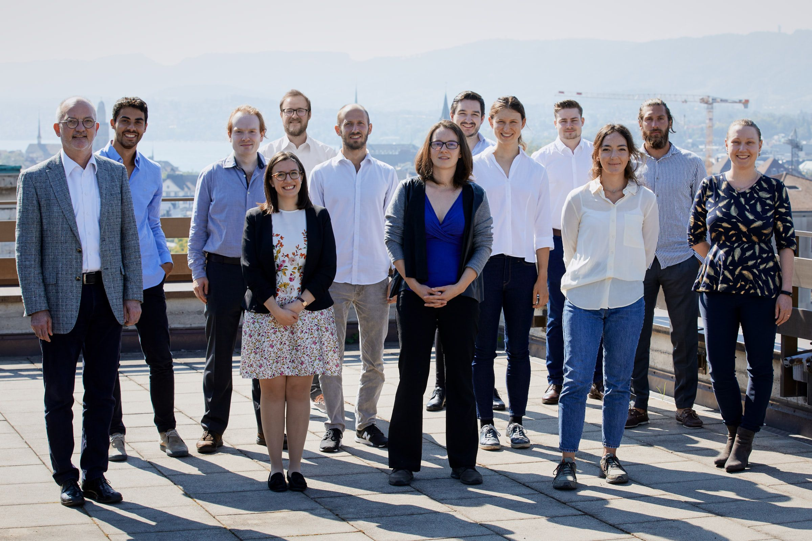

|
About us

In the research team of Systems Design (in German: Systemgestaltung, abbreviation: _SG_), we aim at the scientific description, modeling and computer simulation of "systems" from a theoretical perspective. This includes conceptual issues of systems thinking and systems engineering, formalization of systems dynamics, as well as quantitative approaches for nonlinear dynamical systems. In particular, we apply various methods to investigate COMPLEX SYSTEMS which emanated over the last 30 years from different fields such as statistical physics, evolutionary biology, micro economics, or computational sciences. Based in the Department of Management, Technology, and Economics (D-MTEC) of ETH Zurich, our research in systems design is focused on socio-economic "systems", such as business companies or social organizations, rather than on the design of computer systems or products. In more general terms, we are interested in a fundamental understanding of the DYNAMICS OF ORGANIZATIONS. Some of the questions we address:
In order to find answers to the questions mentioned above, we use a wide range of methods, based on:
In our genuinely interdisciplinary team, researchers with a very different, but quantitative background (physics, mathematics, computer sciences, engineering, economics, social sciences) jointly collaborate. We also have close collaborations with leading teams all over the world. |
||